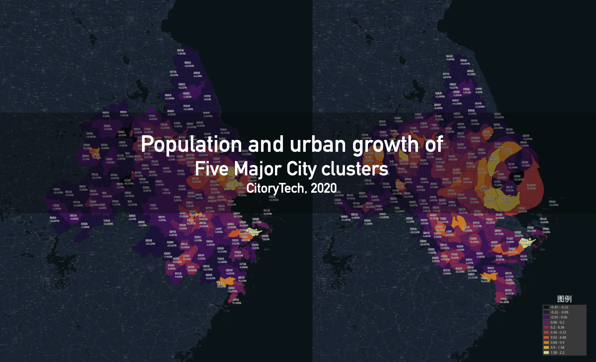
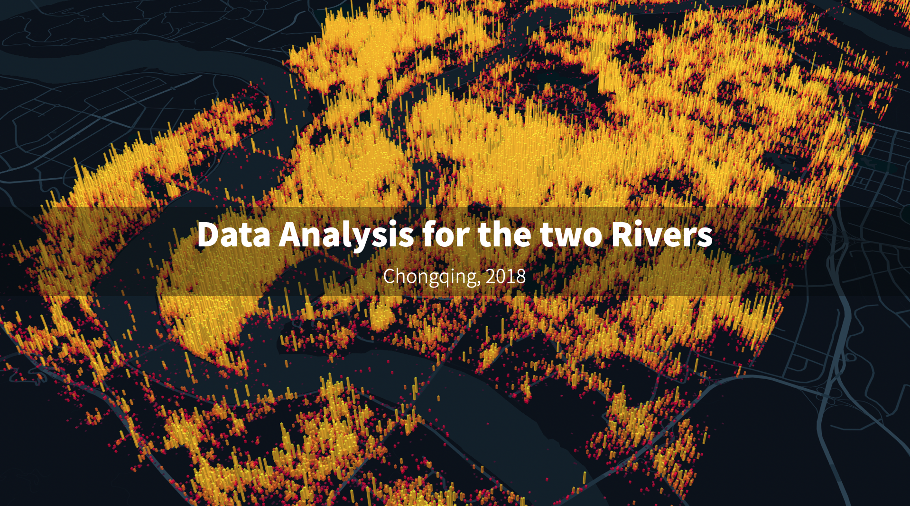
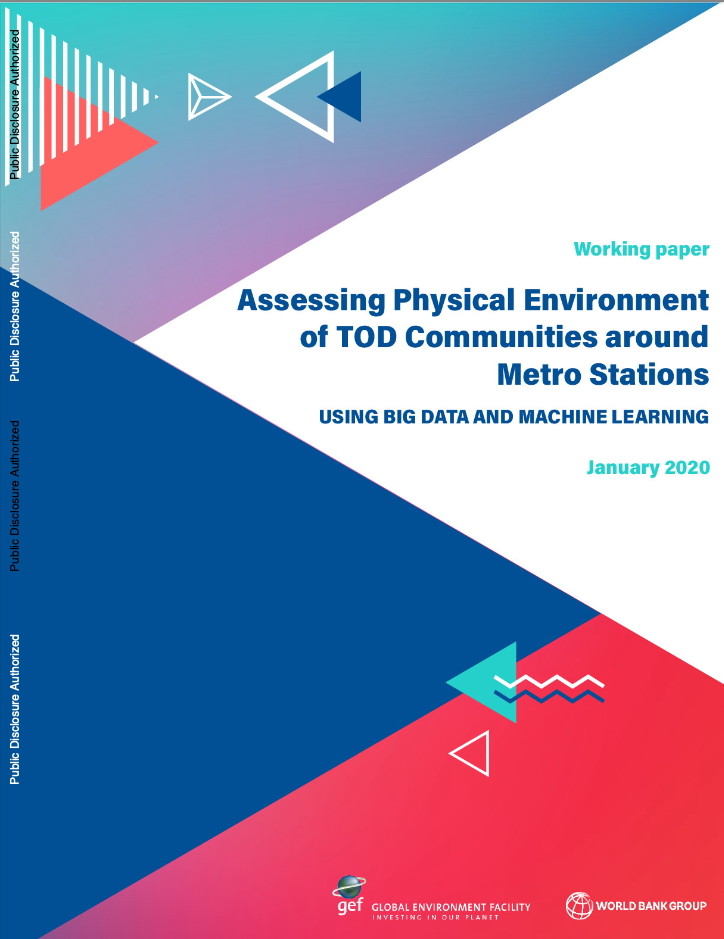

To obtain the slides view password, please contact me.
Urban Growth (2020)
In this project, we provided a well-known real estate developer with an assessment of the development overview and future evolution of China’s five major city clusters. This study combined the LandScan population change data over the past 20 years with the scope of urban land boundaries inferred from VIIRS data, conducting a comprehensive and large-scale comparison over a long period between “people” and the spatial expansion of “cities.”

Aesthetic Evaluation (2019)
Adopting an approach similar to Place Pulse, we developed a tool for our government clients that integrates calibration scoring, assessment, and the automatic training and generation of recommended signage for stores.
VGE for Lujiazui (2019)
In this project, we utilized Unreal Engine 4 (UE4) to reconstruct a game-like virtual space for the Lujiazui District in Shanghai. The project designed a skywalk, connecting the various buildings of this prime commercial center in the heart of Shanghai. This connection enhanced the environment and reshaped the public space, elevating the overall experience of the area.
24 Hour of Jialing River (2018)
In this project, based on the 24-hour China Unicom mobile signaling data of Chongqing, we analyzed the population mobility data along the banks of the Jialing River. From this analysis, we identified the movement patterns of different types of populations.

Time contour (2018)
In this project, we built a web-app based on Didi driving speed data to retrieve the time contour of any point in Shanghai based on different period of a day. One of the original idea of this project is to find the “meeting point” for users within the same city after work.
Visual Comfortness (2018)
This project involves a study on street environment comfort assessment conducted in a community in Nanjing. We collected videos of the walking environment throughout the community and conducted a comprehensive assessment using computer vision, including object detection, semantic segmentation, and more.
Later on, a similar approach was carried out for a TOD study in Beijing in collaboration with World Bank. The report can be view here.

24 Hour Cycling (2017)
This a visualization demo based on user data from Xingzhe shown on the 2017 Bicycle EXPO.
AI Book (2017)
This is a user interaction screen provided inside a popular bookstore designed by Tadao Ando.
Patterns Finder (2017)
A working-on projects for any user who draws some lines to provide best matched satellite images all over the world.
Informal Vendors (2016)
We extracted features from urban street scenes using a trained model and then further identified the vaguely defined content of “informal street vendors” through additional manual calibration. Applying fine-tuning to this specific scenario in urban research was an innovation at the time.

Shenzen Pulse (2014)
We collected a vast amount of check-in data from Weibo and used it to visualize the evolution of maps based on 24-hour periods.
Boston Taxi (2013)
This is the visualization work based a Boston Taxi data challenge.